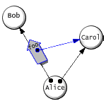
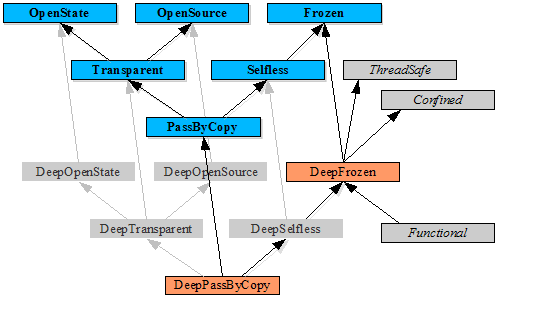

| |
Auditors: |
||||||
Adapted from http://www.sims.berkeley.edu/~ping/auditors/.
Ka-Ping
Yee
Computer Science Department
University of California, Berkeley
ping-at-zesty.ca
Mark
S. Miller
Hewlett Packard Laboratories
John Hopkins University
markm-at-caplet.com
Abstract
We introduce auditors, a program annotation and verification scheme similar to type declarations, but more general in some ways: auditors can be dynamically generated and applied at run-time, and can inspect the source code of the annotated object. Auditors allow objects to make mandatory commitments about their behaviour (such as immutability or determinism), as contrasted with types, which constrain data but are only discretionary with respect to behaviour. The inspection facility is extensible since auditors can themselves be part of the program. In particular, we describe an implementation of auditors for E, a language platform for capability-secure distributed programming, and apply auditors to make E the first language capable of supporting secure confinement at the object level.
KEYWORDS
program verification, object-capability security, confinement,
information flow, code signing, programming by contract
Background
E [E] is a language designed from the ground up for secure distributed programming. In this regard, it is quite unique (*** too strong); although a few other languages have been designed with similar goals, E is the only known language under active development that is specifically aimed at enabling safe co-operation between mutually untrusting parties, whether these parties co-exist within one address space or are hosted by mutually untrusted machines. (*** Mozart, M, ToonTalk, Sebyla?)
The E model of computation combines lambda abstraction and message dispatch to yield a world of communicating objects. To this, E adds a "proxy comm" mechanism allowing objects on remote machines to be transparently represented by local proxies. Cryptography is built into this communication infrastructure, making ordinary message-passing a means for secure computation among co-operating objects distributed across networked machines.
To support concurrency, E allows messages to be sent either synchronously or asynchronously. Asynchronous messages immediately produce a "promise" for the returned value, which later resolves to an actual value when the result is ready. Promises can be transparently used both as arguments in further messages and as the recipients of messages. This ability to send non-blocking messages, together with a concurrency model based on event loops, makes it vastly easier to write concurrent E programs without fear of deadlock. In addition, promises cause messages destined for a remote machine to be automatically pipelined, which dramatically reduces latency by cutting down on network round-trips.
Actor semantics [Agha87] forms the foundation for the E security model, which is based entirely on messages and object references, and is also better known as "capability-based security" in the systems community. The capability model is simpler to reason about and more logically sound than many of the more common access control models; it is also the best-known model for upholding the principle of least authority, which is essential for good security [KeyLogic89]. Capability-based security will be described in more detail below, as it motivates the verification mechanism presented in this paper.
The current E implementation is written in Java. Source code, tutorials, and extensive documentation are available at http://erights.org/. There is ongoing work to provide additional features in E to make secure and reliable programs easier to write, as well as development of real-world applications that are both more secure and easier to use than their popular commercially available counterparts.
Capability-based Security
In a capability system, authority is conveyed by unforgeable object references, and transmitted only in messages from object to object. Authority is not conveyed in any other way (such as in lists of permissions that reside in the environment, for example). E enforces this discipline by adhering to strict lexical scoping rules and forbidding global state (such as C++ or Java's "static" variables).
The fundamental restriction in a capability system is that there are only three ways that an object B can obtain an authority to access another object C:
-
The creator of B endows B with authority to access C when B is created; or
-
B creates C, and thereby has authority to access C; or
-
another object A, which possesses authority to both B and C, chooses to transmit to B the authority to access C.
The following figure illustrates the last of these three cases. This is the basic authority-transfer operation in a capability system, and it is the only way that a new authority relationship can come about between two extant objects [Miller00].

Figure 1. A transmits C to B. (We call this a "Granovetter diagram", after [Granovetter73].)
Translated into the terms of an E program, we can say that object B can obtain a reference to C only if:
-
C is visible in the scope of the expression that creates B; or
-
B contains the expression that creates C; or
-
A calls a method on B with C as an argument, or returns C in response to a call from B.
These simple rules make it straightforward to reason about the security properties of a capability system. It is easy to show that only connectivity begets connectivity. This makes it feasible to run untrusted code and to transmit limited authorities to untrusted objects, as long as we can initially be assured of bounded connectivity. An object that has no ability to transmit or receive authority to other objects is said to be confined [Lampson73]. Achieving proper confinement, and being able to rely on it, is a major step forward, as confinement enables entirely new kinds of safe co-operation. To our knowledge, no other language system currently supports object-level confinement.
Note that there is an important difference between confining information and confining authority. It is virtually impossible in practice to prevent a malicious program from covertly transmitting information to the outside world by altering measurable characteristics of the hardware such as processor load or disk activity (this is informally known as "wall-banging"). However, it is possible to prevent it from transmitting authority outward, by ensuring that it cannot act under the command of any external entity. This is achieved by instantiating the object in a context that is isolated from information from external sources; if we know that no path connects an external input to the object, then no such path can ever come into existence.
| information |
authority |
|
| prevent from |
possible |
possible |
| prevent from |
practically impossible |
possible |
Figure 2. Feasibility of types of confinement.
Let's now switch tracks for a moment to describe the mechanism by which we will ensure proper confinement.
Motivation
E's consistent scoping and syntax rules make it straightforward to determine whether an object is confined by inspecting its source code. Confinement is perhaps the application that provides the strongest motivation for auditors, but in general we can verify many kinds of useful properties by inspecting code. We can make programs more secure, more reliable, and in some cases more efficient by being able to ensure that objects meet desired constraints on their behaviour. Rather than limiting this ability to a few predefined kinds of constraints, we want to allow the programmer complete flexibility to define new kinds of behaviour. Hence, our auditing scheme allows auditors to be themselves implemented in E, and when an object needs to be audited, we hand over the syntax tree for the auditor to inspect as it likes.
Type declarations are one example of a behavioural constraint where the semantics are usually up to the programmer and implied merely by the programmer's choice to declare a particular object to be of a particular type. A type declaration can be considered a special case of an auditor where the auditor does not inspect the code, trusting that the programmer has correctly written the object to fulfill the type's contract and has applied the declaration appropriately.
We can get other kinds of constraints when the auditor does inspect the code. Here are some examples of interesting semantic properties:
-
confined: the object does not overtly transmit outward any information or authority it receives in messages (it can only transmit information or authority with which it was endowed upon creation)
-
deterministic: the object cannot obtain any information or authority except through messages sent directly to it (that is, a log of the received messages is sufficient to replay its entire behaviour)
-
functional: every method on the object has no side effects and produces an immutable result depending solely on its arguments
-
frozen: the object does not ever mutate any local bindings (or in other words, it is indistinguishable from a duplicate that contains copies of the bindings for the free variables accessed by the object's methods)
-
deep frozen: the object cannot ever cause the mutation of anything
-
open source: the object provides access to all of its source code through a standard interface
-
open state: the object provides access to all of its internal state through a standard interface
-
transparent: the object is both open source and open state
-
pass-by-copy: the object is safe to transmit to another party by sending a copy of the object's source code and state
Although determining that a program will actually behave in a particular way is undecidable in general, for all but the last of these properties we can define a straightforward check that admits a reasonable subset of the space of acceptable programs in practice. For example, we can check that an object is immutable and thereby know that it is safe to consider it frozen.
The last property, pass-by-copy, is unlike the others in that it is discretionary. To be able to be passed by copying, an object needs only to be frozen, but not all frozen objects have to be pass-by-copy. The decision to declare an object pass-by-copy is left up to the programmer since it has both a security implication and a visible operational effect. The transmission of a pass-by-copy object entails exposure of the object's source code and state to the remote system. The operational effect is that when the object is transmitted to a remote system, the receiver will get a local object that responds immediately to messages, instead of a proxy for a remote object. As a design decision, we require that objects can be declared pass-by-copy only if they are transparent (both open source and open state). The purpose of this requirement is to prevent any possibility of the illusion that a pass-by-copy object could keep these things secret.
Through careful use of auditors, we can control the information flow among various objects and enforce many kinds of useful security constraints. We can also use auditors to optimize program execution and data transfer. For example, if we know that an object is functional, we can cache its output, reorder calls, or skip repeated calls. If we know that an object is pass-by-copy, we can transmit it to a remote party by sending a copy of its state instead of constructing a proxy on the remote system.
He turned around and found a crowd of Auditors watching him. There were dozens of them.
He sighed and grinned his sheepish little grin. He'd had just about enough for one day.
"Well, I expect you have heard of Rule One, right?" he said.
That seemed to give them pause. One said: "We know millions of rules, human."
"Billions. Trillions," said another.
--Terry Pratchett
"Thief of Time", Harper, 2001
The following figure illustrates the implication relationships between the various properties described above.

Figure 3. Relationships between properties.
A -> B means that property A implies property B.
Name Bindings
In E, names are bound using either def or var. The def keyword declares a final value: the binding of the name to the value cannot be changed (though the value might itself be mutable). For example, a constant can be declared this way:
? pragma.syntax("0.8") ? def answer := 42 # value: 42
An object with behaviour is defined by an object expression containing a list of method definitions, such as this one:
? def object { > to greet() :void { > println("Hello!") > } > } # value: <object>
A function declaration is shorthand for creating an object with a single method.
? def twice(f) :void { f(); f() } # value: <twice>
E permits us to specify a value guard for a constant value, a formal parameter to a method, or the return value of a method. The guard must provide a coerce method that either figures out how to make an object conform or throws an exception. In the following example, int is bound to a guard whose coerce method checks that the argument is an integer.
? def step :int := 2 # value: 2 ? def adder { > to incr(x :int) :int { > return x + step > } > } # value: <adder> ? adder.incr(3) # value: 5 ? adder.incr('a') # problem: <ClassCastException: \ # Character doesn't coerce to an int>
The var keyword binds a name to a slot, a mutable storage location that can accept new bindings:
? var i := 1 # value: 1 ? i := 2 # value: 2 ? i += 1 # value: 3
In a var declaration, we can specify a slot guard to customize the behaviour of the slot; the slot guard can check the initial value, and can supply anything it likes as the slot. The makeSlot method on the slot guard is called to create the slot. The slot is expected to have a getValue method and a setValue method; a typical custom slot might have the argument to its setValue method guarded by a corresponding value guard.
? var i :int := 1 # value: 1 ? i := 3 # value: 3 ? i := 'a' # problem: <ClassCastException: \ # Character doesn't coerce to an int>
The int object, which we have used in these examples, to serve as both a value guard and a slot guard, might be implemented in terms of a native isInteger function as follows:
def int { to coerce(x, optEjector) :any { if (isInteger(x)) { return x } else { throw.eject(optEjector, "Must be an integer") } } to makeSlot(x :int) :any { var v := x def slot { to getValue() :any { return v } to setValue(x :int) :void { v := x } } return slot } }
In this example, we have used the any guard in a few places, which allows any object to pass. Any method that wants to return a value must explicitly declare a guard because the default guard on all returned values in E is void, which coerces anything to null. This default was chosen in order to be conservative about the leakage of authority or information, in accord with the least-privilege design philosophy.
Auditors
With the addition of the auditor feature to E, we can now declare that an object expression should be checked by a list of auditors. Each auditor gets to examine the source code of the object expression and make a pass-fail judgement. The semantics of auditing are defined as if the check happens just before each time the object is instantiated (though for efficiency reasons we employ some optimizations in order to avoid actually running the auditor for every new object instance). Execution of the object expression proceeds only if all the audits succeed. For example, the following function constructs and returns a new object that is audited by the confined auditor:
def makePoint(x :int, y :int) :any { def point implements confined { to getX() :int { return x } to getY() :int { return y } } return point }
The auditor names are resolved in the same namespace as all other bindings, so we assume that confined has been brought into the current namespace by an earlier import or definition. The confined auditor can determine by inspecting the code that the object expression for self sends no messages and returns only values it was endowed with upon creation, so it passes.
At a later point when the object instance is bound to another name or passed as an argument to a method, it can be checked by a guard to verify that the instance indeed originates from an object expression that passed an audit:
def secret_stuff(x :confined) { # safe to send secrets to x }
Notice that in this case we have used a single object, confined, as both the auditor and the guard. This will not always be the case; in some situations, it is necessary to separate the ability to audit from the ability to guard. To identify the different use cases for auditors we have to make two important distinctions.
Use Cases for Auditors
First, we distinguish between non-discriminating and discriminating auditors. A non-discriminating or "rubber-stamping" auditor will allow anything to pass; its significance therefore lies in the fact that the programmer has chosen to declare the auditor on an object. A discriminating auditor inspects the abstract syntax tree to ascertain a particular semantic property, and is trusted to do so correctly. The auditor should be discriminating when we are interested in an intrinsic property of the object being audited, i.e. what the object is.
Second, we distinguish between auditors that are closely held and those that are not closely held. Recall that an auditor is an authority-carrying object like any other, and must be brought into scope before it can be used. When an auditor is closely held, we are careful to ensure that it is only available to a specific set of parties. When it is not closely held, it is freely provided to anyone who wants to use it. In most cases, the guard is usually freely available. Therefore, if the auditor is closely held, it is typically a separate object from the guard; if not, the auditor and the guard can both be the same object. The auditor should be closely held when we are interested in the origins of the object being audited, i.e. who created the object.
Different combinations of these two properties are appropriate for different use cases.
| non-discriminating |
discriminating |
|
| not closely held |
type declarations |
semantic verification |
| closely held |
code signatures |
Figure 4. Uses for different kinds of auditors.
A non-discriminating, not closely held auditor can be used like a type declaration. The auditor can be applied by anyone to any object to declare its type, and the guard then plays the role of a runtime type-check (or type coercion).
A non-discriminating, closely held auditor can be used to implement code signatures. The auditor and guard are analogous to the private key and public key in conventional code signing; when a guard verifies an object instance, we can be sure it was created by an entity that holds the auditor.
Finally, a discriminating, not closely held auditor can be used to ensure behavioural properties of an object such as the ones identified in Figure 3. Because the auditor is discriminating, it is safe to allow anyone to try to use it.
Example
Our earlier example with the Point object shows how we would use a discriminating auditor to determine confinement. Here is an example to illustrate how we can also use non-discriminating auditors to help achieve desirable security properties.
Suppose we would like to implement, in E, a special service called a sealer. A sealer takes an object and seals it up in an envelope, such that the envelope can be passed among untrusted parties, and the contents can be extracted only by a party in possession of the matching unsealer. (Sealers and unsealers provide rights amplification, a capability security primitive.) We will need independent pairs of sealers and unsealers to convey secrets to different parties, so we would like a "brand" service that can generate these pairs on demand.
Here is a naive implementation of a brand.
# E sample def makeBrand() :any { def key { } def sealer { to seal(contents) :any { def envelope { to open(k) :any { if (k == key) { return contents } } } return envelope } } def unsealer { to unseal(env) :any { return env.open(key) } } return [sealer, unsealer] }
The basic idea behind this implementation is that we create a unique key object to go with each pair, and our sealer makes an Envelope that only reveals its contents when presented with the correct key (the == above signifies identity equality). Since the key variable is declared within the scope of Brand, it is visible only to the sealer, the unsealer, and any envelopes of a particular instance of Brand.
Unfortunately, this simple implementation suffers from a serious flaw. Notice that the unsealer passes the key in an open message to an envelope that is received in an outside call to the sealer. Suppose that a malicious intermediary causes an envelope such as this to arrive at the unsealer:
? var key := null ? def nasty_envelope { > to open(k) :void { > key := k > } > } # value: <nasty_envelope>
This envelope would cause the key to leak out to a variable visible to the malicious party, who could then grab the key and use it to unseal any other envelope of the same brand!
One way to solve our problem is to use an auditor to authenticate the party to whom we send the key. Suppose that Stamp() makes a new rubber-stamping auditor. We can use this auditor as a closely held code signer to make sure that the key never escapes:
# E sample def makeBrand() :any { def key { } interface s {} def sealer { to seal(contents) :any { def envelope implements s { to open(k) :any { if (k == key) { return contents } } } return envelope } } def unsealer { to unseal(env :s) :any { return env.open(key) } } return [sealer, unsealer] }
The expression "interface s {}" creates a new rubber stamp for each new sealer-unsealer pair. Since it is lexically scoped within makeBrand, we can see that only this particular Envelope constructor can use it to stamp envelopes. By guarding the argument to unseal with our stamp, we ensure that the unseal method only accepts envelopes created by the corresponding sealer. It follows that the key can no longer leak out.
Although this looks similar to a type declaration, it is more dynamic in nature, since we create a different stamp for each new instance. The ability to dynamically generate and use auditors and guards gives this mechanism a great deal of extra flexibility.
Auditing Protocol
The interface that we provide for implementing auditors is as follows.
Auditors must provide an audit method that takes an abstract syntax tree as an argument and returns a Boolean value. The argument is the abstract syntax tree of an object expression, called its script, and consists of a list of methods and their implementations. The script alone is not enough, because many auditors need to examine variable declarations that occur outside the object expression. Therefore, the script provides a method synEnv() that can be called to obtain its syntactic environment. For each free variable accessed in the script, the syntactic environment maps the name of the variable to the abstract syntax tree for the pattern where the variable was declared. The auditor can look at this pattern to see if the variable was guarded for a property it requires, and can recursively ask the pattern for its syntactic environment if necessary.
For instance, suppose that script is the script for the example Point class shown earlier. Here is what you would see if you asked the script for its synEnv():
? script # value: escript`{ # to getX() :int { x } # to getY() :int { y } # }` ? script.synEnv() # value: ["x" => epatt`x :int`, # "y" => epatt`y :int`, # "int" => null] ? script.synEnv()["x"] # value: epatt`x :int` ? script.synEnv()["x"].synEnv() # value: ["int" => null]
To verify in an E program whether an object instance has been audited by a particular auditor, we call the audited function, which is available in the universal scope. This function accepts two arguments, the auditor and the object, and returns a Boolean value.
The behaviour of a guard is defined in its coerce method, so to implement a guard corresponding to an auditor, we simply put a check in the coerce method.
def auditor { to audit(script) :boolean { # ... } } def guard { to coerce(x) :any { def y := x.conform(guard) if (audited(auditor, y)) { ^y } else if (...) { # convert y to something acceptable } else { throw("coercion failure") } } }
This protocol is designed so that the guard has the option of choosing whether or not to involve the object in the process; it can ask the object to provide a conforming representative for itself by calling the object's conform method, as above, or it can skip this step.
The ability to verify an audit without involving the object is a significant design point of this protocol. A previous design for the auditing protocol relied on sealers closely held by the objects themselves. In the old protocol, verification of an audit always involved asking the object to provide proof of an audit. Although an object could not successfully make a false claim to have passed an audit, it could change its behaviour based on its knowledge that audit verification was requested. The new design allows us the option of preventing this information leak.
Implementing the Protocol
The E virtual machine executes abstract syntax trees, not bytecode. After source code is parsed into an AST, it passes through a few phases of transformations, which translate higher-level constructs into primitive constructs and perform some optimizations, and then a final phase in which names throughout the tree are replaced with pointers to their bound values. The final phase is possible because the scope of all names can be statically determined; when the final tree is executed, it contains only direct pointers to values and slots, and no name lookups are necessary.
To get the information we need about the syntactic environment from the AST, we introduce one extra phase just before this last binding phase. In this new pattern-binding phase, we walk the tree of the expression to be evaluated, gathering the name-to-pattern bindings in a PatternMap structure as we enter and exit scope blocks. The PatternMap is a tree: the root contains a table of the outermost bindings, and each tree node stores an inner binding with a link to the node for its parent scope. As the PatternMap tree is built, pointers to tree nodes are saved in the AST for later reference.
When the syntactic environment is requested for an AST node, we first compute the list of all free names accessed in that node's subtree. Then we look up each of these names in the PatternMap as viewed from that node, and cache the resulting table in the AST node as its syntactic environment.
There are two significant optimizations in the current implementation. First, we can avoid repeating the whole auditing process every time we instantiate an object if we know that the auditor is functional. Therefore, the functional auditor is implemented natively in the interpreter, made available in the universal scope, and used by the auditing machinery. A programmer writing an auditor in E will usually want to write the auditor so it passes the functional auditor, and declare it functional. Each object expression remembers the functional auditors that have successfully audited it, so it can safely skip repeated audits.
Second, if we can determine that an object expression is always audited by the same auditor, we can make a single entry in the audit registry for the object expression instead of a separate entry for every instance. Each instance has a pointer to a vtable containing its method definitions, so we register the auditor with the vtable. Then when we look up an audit in the registry, we get the instance's vtable and check for the presence of an (auditor, vtable) entry as well as an (auditor, instance) entry.
Implementing Specific Auditors
We are now in a position to describe how to implement each of the kinds of auditors shown in Figure 3.
- Confined: Check that:
- the object only sends messages to objects whose declarations are guarded by DeepFrozen; and
- all of the object's methods have return values guarded by DeepFrozen.
- Deterministic: Check
that each name accessed in the object expression is either:
- declared final with def and guarded by the DeepFrozen auditor; or
- visible only to this object expression and declared guarded by Deterministic.
- Functional: Check that the object passes the DeepFrozen auditor and that the return value for each method is guarded by DeepFrozen.
- Frozen: Check that all names accessed in the object expression are method arguments (which are always final), or are declared final with def.
- DeepFrozen: Check that all names accessed in the object expression are method arguments or declared final with def, and guarded by the DeepFrozen guard or by the guard for a primitive immutable type (such as int or char).
- OpenSource: Ensure the existence of a standard method whose implementation invokes a special language keyword for returning the abstract syntax tree of the object expression.
- OpenState: Ensure the existence of a standard method that generates and returns a mapping containing the names and values of all the variables accessed in the object expression.
- Transparent: Check that the object passes both the OpenSource auditor and the OpenState auditor.
- PassByCopy: Check that the object passes both the Frozen auditor and the Transparent auditor.
Related Work
A wide variety of work has been done on mechanisms for ensuring the security of mobile code, including safe interpreters, signed code, static verification, and proof-carrying code, surveyed in [Kato96] and [Moore98].
Many systems have been developed to aid in code inspection for detecting potential security problems. [Bokowski99] introduces a restriction he calls "confined types" and a technique for finding potential violations, although he does not use the standard definition of the confinement property (following [Lampson73]) that we use here. [Iosif00] introduces property specifications into Java source code to permit formal verification. This kind of static analysis generally requires annotation of and access to the complete source code of a program, whereas we wish to address the situation where some program modules are untrusted.
The auditor system we present allows E to dynamically load additional code modules during execution, while performing modular verification. In earlier work, [Fong98] presents a scheme that permits modular verification in the presence of dynamic linking, but only applied to standard type checking, with an eye towards eventually addressing other security properties like confidentiality and integrity. [Volpano98] devises a type system for verifying confinement properties by applying typing rules analogous to the Simple Security property and the Bell-LaPadula *-property. However, the type analysis is limited to a fixed set of security levels that must be known in advance and declared in the annotations on variables. This contrasts with our approach, in which confinement (or other security properties) can be determined dynamically on a per-object basis.
Much of the work on code verification for language-based security systems has focused on inspection at the bytecode level. All the attention to bytecode is somewhat surprising, as the information lost during compilation makes bytecode much more difficult to verify and optimize than a syntax tree. The Juice technology is a notable exception [Franz97], in which compressed syntax trees enable highly efficient transmission and verification of Oberon programs. This work follows their lead, taking an approach to code verification that operates on abstract syntax trees rather than stack-based or register-based virtual machine instructions. The expressiveness of syntax trees makes it feasible to implement verifiers in small amounts of E code, and so we take things a step further by allowing extensibility in the form of pluggable verifiers.
Conclusions
We have presented, to our knowledge, the first language system providing a mechanism for code verification that can be extended in the language itself. We also believe this to be novel in that it allows a programmer to declare confinement at the granularity of individual objects, and to make confinement and other security properties part of the interface specification.
A logical next step is the extension of the auditor system with composition operators analogous to the standard composition of types. Although it is already possible to express an auditor in terms of other auditors (for example, to write an auditor that audits for "function taking a deepfrozen argument and returning a passbycopy value") it is tedious to have to do this manually for each derived type.
Likewise, it would be helpful to be able to express the implication relationships among auditors, such as those shown in Figure 3, by arranging auditors in a hierarchy just like types and subtypes. Again, the customizable nature of the design make it possible to implement this by hand, by adding appropriate checks to a guard, but it would be nice to have more standardized support from the language.
References
[Agha87] G. Agha and C. Hewitt. Concurrent programming using actors. In Object-Oriented Concurrent Programming, p. 37-53. MIT Press, 1987.
[Bokowski99] B. Bokowski, J. Vitek. Confined Types. In Proceedings of ACM OOPSLA 1999, p. 82-96, ACM Press, 1999.
[Franz97] M. Franz. Beyond Java: An infrastructure for high-performance mobile code on the World Wide Web. In S. Lobodzinski and I. Tomek, editors, Proc. of WebNet '97, pp. 33--38, Oct. 1997. http://citeseer.nj.nec.com/franz97beyond.html.
[Fong98] Philip W. L. Fong and Robert D. Cameron. Proof Linking: An Architecture for Modular Verification of Dynamically-Linked Mobile Code. In Proceedings of the Sixth ACM SIGSOFT International Symposium on the Foundations of Software Engineering (FSE'98), Orlando, Florida, November, 1998. [pdf]
[Granovetter73] M. Granovetter. The Strength of Weak Ties. In American Journal of Sociology (1973), vol. 78, p. 1360-1380. [pdf]
[Iosif00] On the Specification and Semantics of Source Level Properties in Java. In Proceedings of 1st International Workshop on Automated Program Analysis, Testing, and Verification (June 2000), p. 83-88.
[Kato96] Safe and Secure Execution Mechanisms for Mobile Objects. Mobile Object Systems 1996, p. 201-212.
[KeyLogic89] S. Rajunas. The KeyKOS/KeySAFE System Design. Technical Report SEC009-01, Key Logic, Inc., March 1989. (Available online at http://www.cis.upenn.edu/~KeyKOS/.)
[Lampson73] B. Lampson. A Note on the Confinement Problem. In Communications of the ACM, 16:10 (October 1973), p. 613-615.
[Miller00] M. Miller, C. Morningstar, and B.
Frantz. Capability-based Financial Instruments. In Proceedings of
Financial Cryptography 2000,
p. 349-378. (Available online at http://www.erights.org/elib/capability/ode/.)
[Moore98] J. T. Moore. Mobile Code Security Techniques. Technical Report MS-CIS-98-28, Departement of Computer and Information Science, University of Pennsylvania, May 1998.
[Volpano98] D. Volpano and G. Smith. Confinement Properties for Programming Languages. In ACM SIGACT News, 29:3 (1998), p. 33-42
Unless stated otherwise, all text on this page which is either unattributed or by Mark S. Miller is hereby placed in the public domain.
| |
|
report bug (including invalid html)
|
||||||||